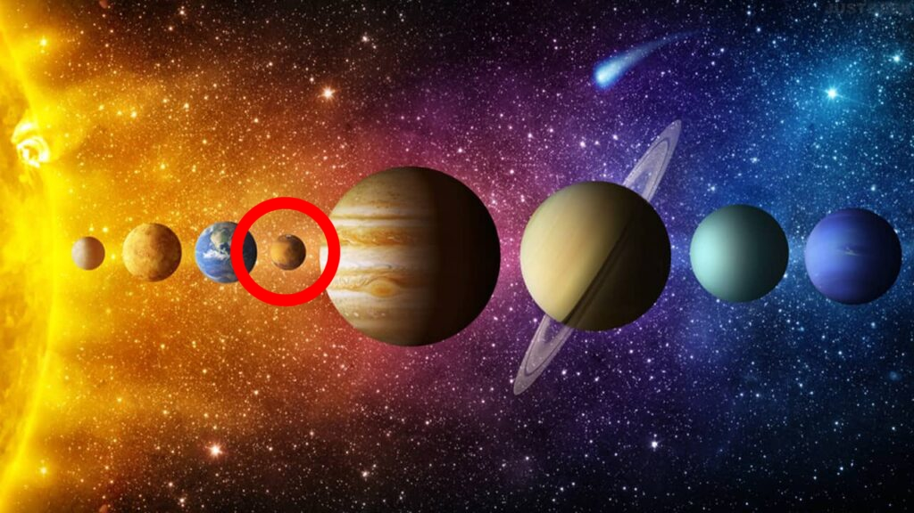

Mars
Mars est, après la Terre, la planète la mieux adaptée pour abriter des humains.
Les jours y durent à peine plus de 24 heures et quatre saisons s'y succèdent.
Mars a reçu le nom du dieu romain de la Guerre en raison de sa couleur rouge sang, due à l'oxydation des roches riches en fer.
| Mars |
 |
Fiche d'identité
- Distance moyenne au Soleil : 228 millions de km
- Température de surface : -125 °C à 25°C
- Diamètre : 6800 km
- Durée du jour : 24,5 heures (1 jour terrestre)
- Durée de l'année : 687 jours terrestres
- Nombre de lunes : 2
- Gravité de surface (Terre = 1) : 0,38
|
Lunes martiennes
Mars possède deux petites lunes sombres en forme de pomme de terre.
Phobos et Déimos pourraient être des astéroïdes capturés jadis par Mars.
Phobos, un peu plus grosse, abrite un vaste cratère d'impact, nommé Stickney.
Les deux lunes sont très cratérisées et semblent couvertes d'une couche de poussières épaisse d'au moins 1 m.
Les hauteurs de l'Olympe
Mars abrite les plus grands volcans du Système solaire.
Le plus impressionnant est Olympus Mons (ou mont Olympe).
Large de 600 km, il occuperait pratiquement toute la France.
Culminant à 26000 m d'altitude, il est trois fois plus haut que l'Everest.
L'énorme cratère enfoncé en son centre mesure 90 km de diamètre

Lien vers la page dédié au Système Solaire
Lien vers la page d'acceuil